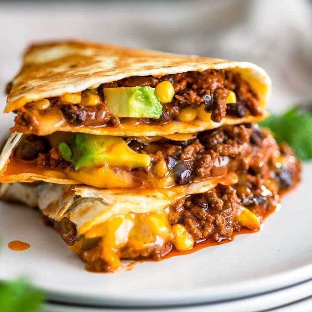

Golden Lentil Quesadillas

Description
These quesadillas have the perfect blend of spice and gooey cheese.
You can use any kind of beans to make these although my favourite filling is with brown lentils.
Ingredients
- Flatbreads
-
Filling:
- Cheddar cheese, grated
- Brown lentils
- Red onion
- Sweetcorn
- Minced garlic
-
Spice mix (makes enough for 1lb of meat or 3 cups of legumes):
- Chilli powder, 1 Tbsp
- Smoked paprika, 1 tsp
- Cayenne chilli powder, 1/4 tsp
- Oregano, 1/2 tsp
- Cumin, 1 tsp
- Cracked black pepper, 1/2 tsp
- Salt, 1/2 tsp
- Cornflour, 1/2 tsp (to prevent filling sogging anything up)
Steps
- Mix up the spice mix ingredients in a bowl and set aside.
- Chop the onions and garlic and add to a large mixing bowl. Here's a tip: if you're sick of struggling to remove the skin from garlic cloves, try crushing the garlic with a sturdy knife before chopping it up. That skin'll come right off.
- Drain the lentils or beans, and rinse them off with cold water.
- Add the remaining filling ingredients to the mixing bowl. Add the spices and mix well.
- Fill half of each flatbread with the mix and fold in half.
- Pre-heat a pan with some olive oil and fry the quesadillas on a medium low heat. We want the cheese to melt in the middle without the outsides getting burnt!
- Use a spatula to periodically check the underside. Flip once it looks golden, crispy and tasty.
- Reduce the heat if the filling doesn't look melted enough already. If the cheese isn't all gooey on the inside, it's not going to be a great quesadilla!
- Once golden and crispy on both sides and the cheese has melted, remove from the pan and place on a napkin to soak up any excess oil. This means it will stay crispy for longer - good if you are a slow eater like myself.
- Try serving with some kind of dip - sour cream or guacamole works!